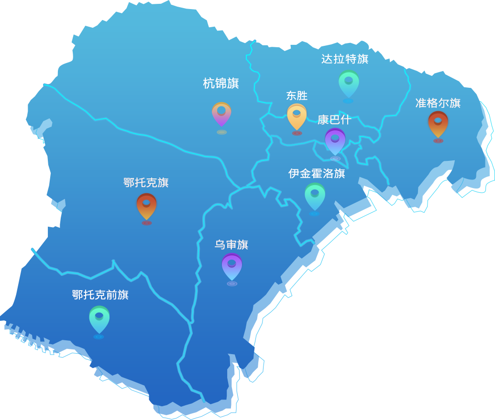
鄂尔多斯移动持续打造网络领先优势，目前，基站总数达5400余个，城市覆盖率超98%，农村覆盖率超90%。加快5G规模部署，建成5G基站2800余个，累计投资超26亿元，已实现5G网络城市、县城、乡镇连续覆盖，工业园区、农村热点覆盖。
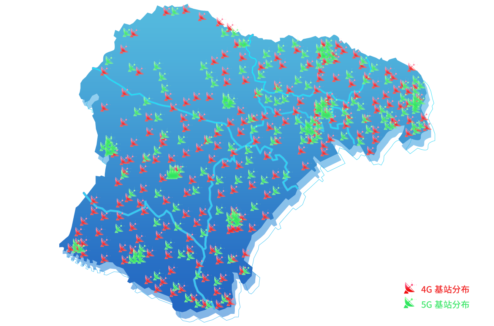
鄂尔多斯移动持续打造网络领先优势，目前，基站总数达5400余个，城市覆盖率超98%，农村覆盖率超90%。加快5G规模部署，建成5G基站2800余个，累计投资超26亿元，已实现5G网络城市、县城、乡镇连续覆盖，工业园区、农村热点覆盖。
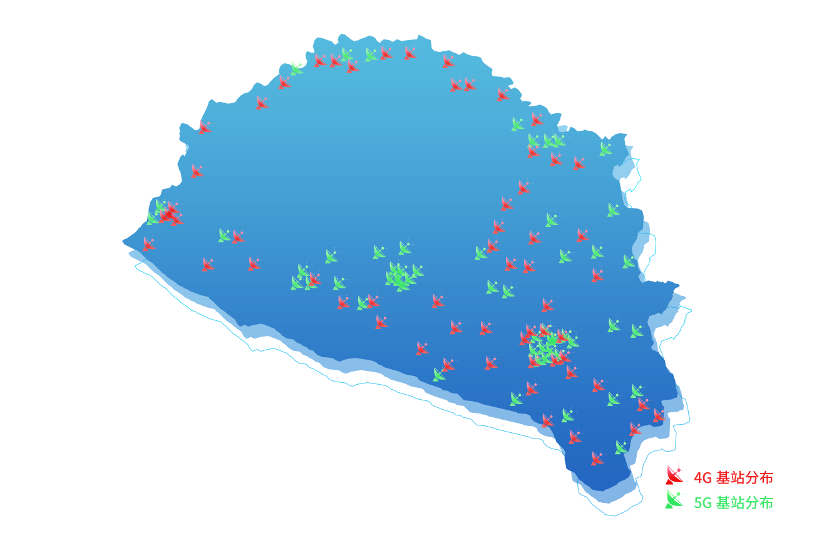
杭锦旗是鄂尔多斯市下辖旗，总面积1.89万平方公里，总人口13.2万。
杭锦旗基站数共计410余个，4G基站覆盖率99.68%，5G基站覆盖率93.77%。
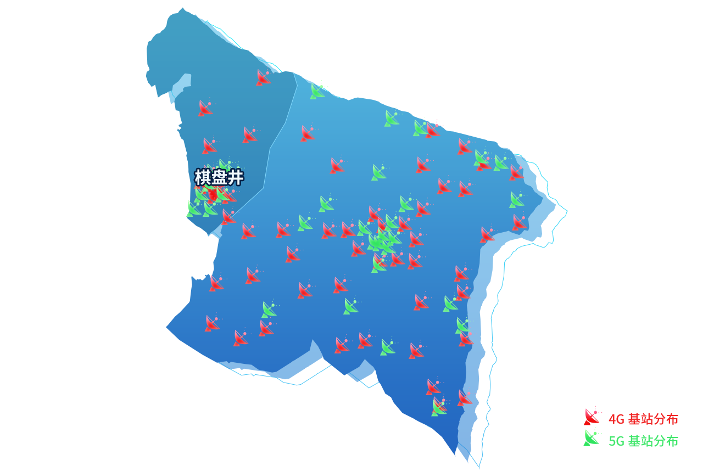
鄂托克旗是鄂尔多斯市下辖旗，总面积20064万平方公里，总人口9万人。棋盘井隶属于鄂托克旗，总面积3614平方公里，总人口8.2万人。为更好服务客户，我公司由鄂旗、棋盘井两个分公司服务于当地客户。
鄂旗基站数共计350余个，4G基站覆盖率99.52%，5G基站覆盖率93.52%。
棋盘井基站数共计290余个，4G基站覆盖率99.54%，5G基站覆盖率97.59%。
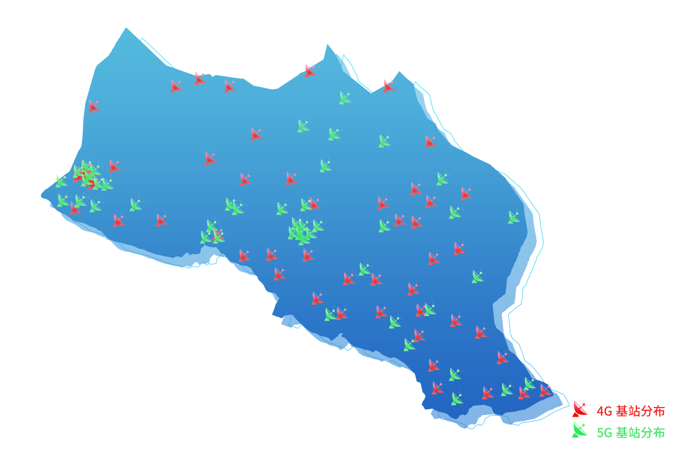
鄂托克前旗是鄂尔多斯市下辖旗，总面积1.218万平方公里,总人口9.5万人。
鄂前旗基站数共计470余个，4G基站覆盖率99.43%，5G基站覆盖率93.71%。
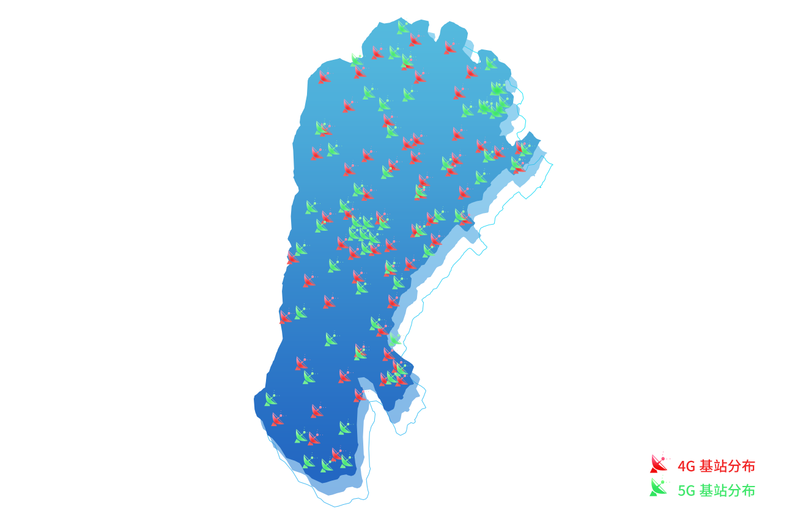
乌审旗是鄂尔多斯市下辖旗，总面积11645平方公里，总人口15.8万。
乌审旗基站数共计680余个，4G基站覆盖率99.66%，5G基站覆盖率93.72%。
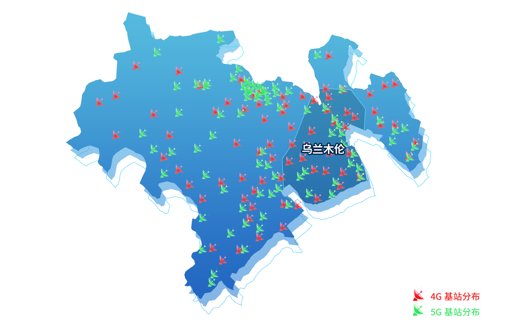
伊金霍洛旗是鄂尔多斯市下辖旗，总面积5600平方公里，总人口20.2万。乌兰木伦镇隶属于鄂尔多斯伊金霍洛旗，总面积726平方千米，总人口4.9万人。我公司由伊旗、乌兰木伦两个分公司服务于当地客户。
伊旗基站数共计820余个，4G基站覆盖率99.55%，5G基站覆盖率95.47%。
乌兰木伦基站数共计210余个，4G基站覆盖率99.59%，5G基站覆盖率96.40%。
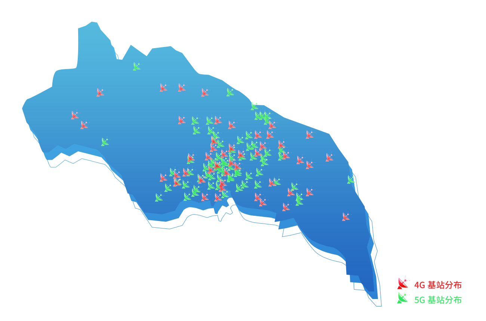
康巴什区是鄂尔多斯新的政治文化中心、金融中心，总面积155平方公里，总人口12万人。
康巴什基站数共计580余个，4G基站覆盖率99.72%，5G基站覆盖率97.84%。
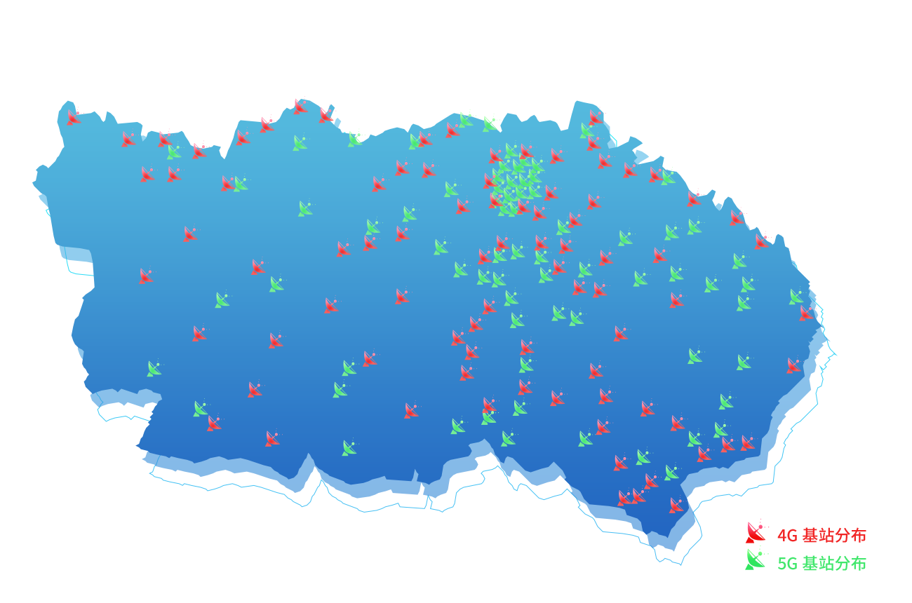
达拉特旗是鄂尔多斯市下辖旗，总面积8200平方公里，总人口34万。
达旗基站数共计810余个，4G基站覆盖率99.48%，5G基站覆盖率95.42%。
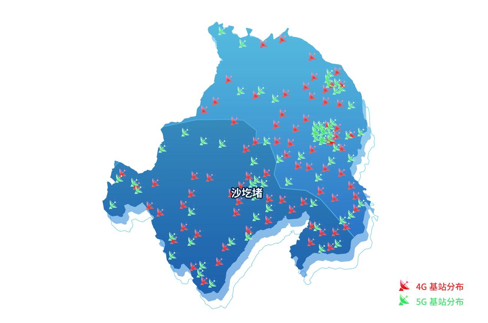
准格尔旗是鄂尔多斯市下辖旗，总面积7692平方公里，总人口32.04万人。沙圪堵镇隶属于准格尔旗，总面积1588.53平方千米，总人口5.3万人。我公司由准旗、沙圪堵两个分公司服务于当地客户。
准旗基站数共计820余个，4G基站覆盖率99.63%，5G基站覆盖率96.16%。
沙圪堵基站数共计510余个，4G基站覆盖率99.51%，5G基站覆盖率94.51%。
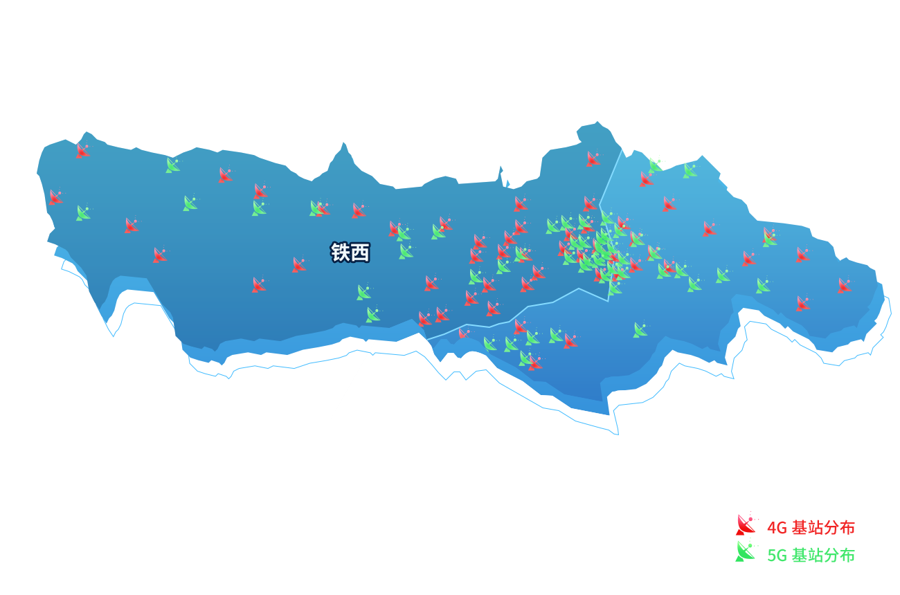
东胜区和铁西是鄂尔多斯市辖区，东胜区面积879.2平方公里，总人口34万。铁西区面积1632.9平方公里，总人口23万。为更好服务客户，我公司由东胜、铁西两个分公司服务于当地客户。
东胜移动基站数共计850余个，4G基站覆盖率99.67%，5G基站覆盖率98.18%。
铁西移动基站数共计650余个，4G基站覆盖率99.75%，5G基站覆盖率98.84%。